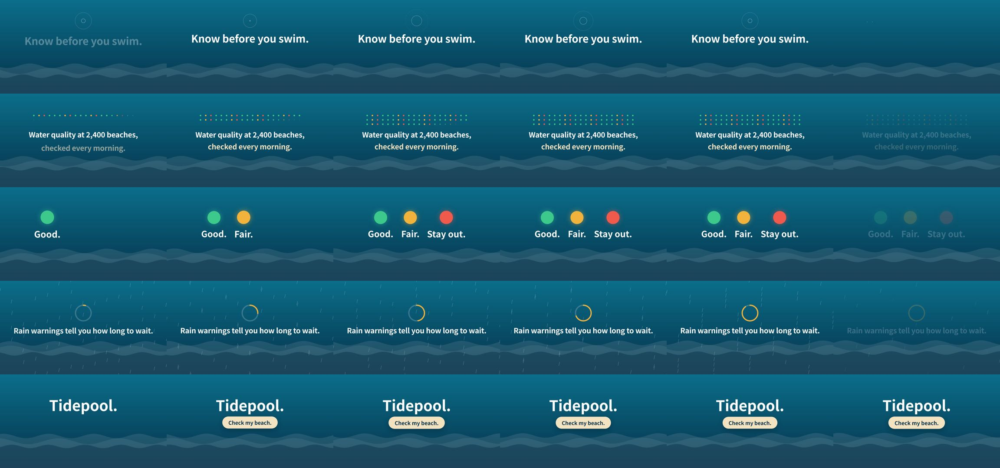

wshuyi/remotion-video-skill: test run, 2026-10-11
The same brief for every skill: a 15-second promo for a made-up app, five fixed lines of on-screen copy, 1920 x 1080 at 30 frames per second. Claude Code (Claude Opus 5.5) made it with the skill in a throwaway sandbox with no API keys for video, image or voice models. 3.4 minutes; sound: no. All results · The brief · How it is checked
The four checks
| Renders to a playable file | pass | H.264 |
|---|---|---|
| Length, size and frame rate as asked | pass | 15.0 s, 1920x1080, 30.0 fps |
| All five lines readable | pass | 5 of 5 |
| The picture moves | pass | 10% of sampled frame pairs held still |
Frames sampled twice a second

How it was made (the session's closing message)
I made the 15-second Tidepool promo with the installed Remotion skill. It doesn't need a paid model or API key. I skipped the skill's voice-over steps because the brief says no voice-over, and there is no music or sound. **Checked:** `ffprobe` shows the file is H.264, 1920×1080, 30 fps and exactly 15.0 seconds long. I looked at a still frame from each of the five scenes. In the first full render, the ripple in the opening scene sat on top of "Know before you swim." I moved it up and rendered again. I re-checked that scene's frame after the fix, but not the other four; that change only touches the opening scene. **What's in it:** all five lines of copy, word for word and in order, on a dark ocean background with moving waves. Each line has about 2.6 to 3.2 seconds on screen: 1. "Know before you swim." with a ripple above it. 2. "Water quality at 2,400 beaches, checked every morning." over a grid of coloured dots. The line is split across two rows, but the wording is unchanged. 3. "Good. Fair. Stay out." each under a green, amber or red circle. 4. "Rain warnings tell you how long to wait." with falling rain and a countdown ring that fills up. 5. "Tidepool." with "Check my beach." on a gently pulsing button. There are no logos or extra wording. The project is in `~/work/project`; the video code is in `src/Tidepool.tsx`, and `npm run render` there rebuilds the file. DELIVERABLE: ~/work/output/video.mp4